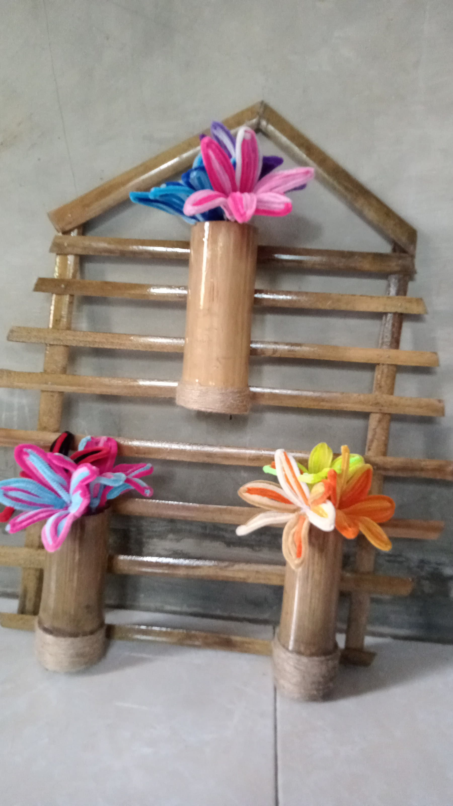

Produk kami

latar belakang
alasan kami membuat produk ini
awalnya kami ingin membuat botol minum menggunakan bambu, tapi dikarenakan bambu itu memiliki serat yang lumayan beresiko jika tidak dibersihkan dengan baik, dan tertelan bisa menyebabkan tenggorokan gatal
kami pun memutuskan membuat gantungan vas bunga dari bambu yang berfungsi menghias rumah